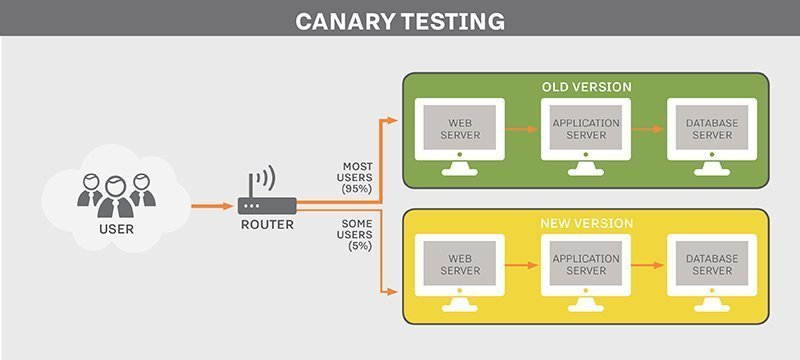
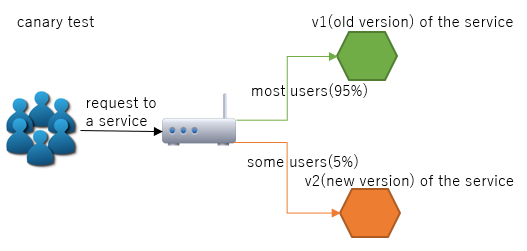

1.权重路由
1.1 权重路由使用场景
在开发或者测试的时候，或者线上发布，线上服务多版本控制的时候，需要对服务提供权重路由，最常见的使用就是，一个服务有两个版本，旧版本V1，新版本v2。在线上灰度的时候，需要通过网关动态实时推送，路由权重信息。比如95%的流量走服务v1版本，5%的流量走服务v2版本。

issue: The Spring Cloud Gateway issue of Allow Rolling Deployments https://github.com/spring-cloud/spring-cloud-gateway/issues/67
1.2 Spring Cloud Gateway权重路由原理
Spring Cloud Gateway中提供了org.springframework.cloud.gateway.handler.predicate.WeightRoutePredicateFactory去实现根据分组设置权重进行路由，因此使用起来相对比较简单，有兴趣的可以debug阅读源码。
public class WeightRoutePredicateFactory extends AbstractRoutePredicateFactory<WeightConfig> implements ApplicationEventPublisherAware {
private static final Log log = LogFactory.getLog(WeightRoutePredicateFactory.class);
public static final String GROUP_KEY = WeightConfig.CONFIG_PREFIX + ".group";
public static final String WEIGHT_KEY = WeightConfig.CONFIG_PREFIX + ".weight";
private ApplicationEventPublisher publisher;
public WeightRoutePredicateFactory() {
super(WeightConfig.class);
}
@Override
public void setApplicationEventPublisher(ApplicationEventPublisher publisher) {
this.publisher = publisher;
}
@Override
public List<String> shortcutFieldOrder() {
return Arrays.asList(GROUP_KEY, WEIGHT_KEY);
}
@Override
public String shortcutFieldPrefix() {
return WeightConfig.CONFIG_PREFIX;
}
@Override
public void beforeApply(WeightConfig config) {
if (publisher != null) {
publisher.publishEvent(new WeightDefinedEvent(this, config));
}
}
@Override
public Predicate<ServerWebExchange> apply(WeightConfig config) {
return exchange -> {
Map<String, String> weights = exchange.getAttributeOrDefault(WEIGHT_ATTR,
Collections.emptyMap());
String routeId = exchange.getAttribute(GATEWAY_PREDICATE_ROUTE_ATTR);
// all calculations and comparison against random num happened in
// WeightCalculatorWebFilter
String group = config.getGroup();
if (weights.containsKey(group)) {
String chosenRoute = weights.get(group);
if (log.isTraceEnabled()) {
log.trace("in group weight: "+ group + ", current route: " + routeId +", chosen route: " + chosenRoute);
}
return routeId.equals(chosenRoute);
}
return false;
};
}
}
2.Spring Cloud Gateway中的权重路由案例
2.1 案例代码地址
https://github.com/SoftwareKing/sc-gateway/tree/master/ch4
2.2 Spring Cloud Gateway Server说明
Spring Cloud Gateway will dispatch 95% of the requests to version 1 and 5% of the traffic to version 2 of a specified service, as shown by the following figure.

我们通过在Spring Cloud Gateway中会配置不同的权重信息到不同URL上，Spring Cloud Gateway会根据我们配置的路由权重信息，将请求分发到不同的源服务组，权重信息如ch4/ch4-gateway中的application.yml所示，主要配置信息如下。
spring:
application:
name: ch4-gateway
cloud:
gateway:
routes:
- id: service1_v1
uri: http://localhost:8081/v1
predicates:
- Path=/test
- Weight=service1, 95
- id: service1_v2
uri: http://localhost:8081/v2
predicates:
- Path=/test
- Weight=service1, 5
Weight=service1, 95，Weight=service1, 5就是路由的权重信息。
2.3 源服务
源服务在本案例中源服务如ch4-service-provider所示，主要提提供Gateway Server权重路由对应的后端源服务。因为比较简单因此不做详细说明，主要代码如下所示。
package org.xujin.sc.service;
import org.springframework.web.bind.annotation.RequestMapping;
import org.springframework.web.bind.annotation.RestController;
import reactor.core.publisher.Mono;
@RestController
public class ServiceController {
@RequestMapping(value = "/v1", produces = "text/plain;charset=UTF-8")
public Mono<String> v1() {
return Mono.just("v1");
}
@RequestMapping(value = "/v2", produces = "text/plain;charset=UTF-8")
public Mono<String> v2() {
return Mono.just("v2");
}
}
2.4 测试
分别启动ch4-gateway，ch4-service-provider进行访问:http://localhost:8080/test 测试,发现会根据所设权重进行路由。